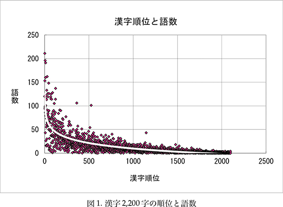
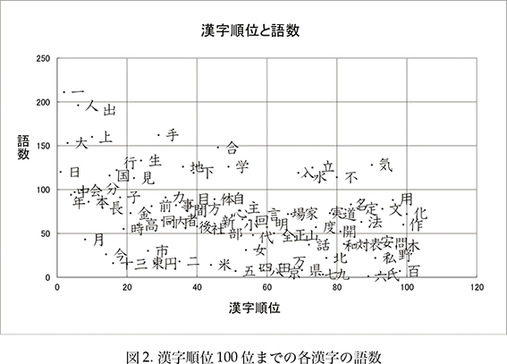
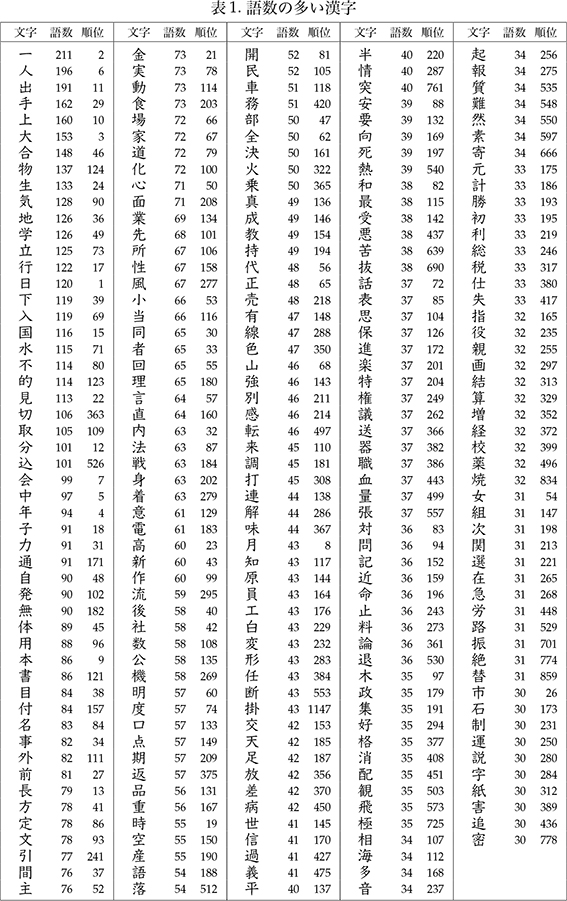

9 語数の多い漢字
この本では、漢字をよく使う順に並べましたが、これらの漢字は語としてどのくらい使われているでしょうか。日本語学習に有用な漢字語彙として選択された約15,000ご語（徳弘、2006）を用いて、この本の2,200 の漢字が約15,000語の中にそれぞれどれくらいの語を持つかを調査しました。調査の結果、漢字の順位の高いものには総じて語数が多く、順位と語数には相関関係が見られました。図1に漢字の順位とそれぞれの漢字の語数を示しました。図2は漢字順位1～100位の漢字を図中に示したものです。表1に漢字を語数の多い順に並べたもの（語数30語までの257字）を示しました。表1で見ると「合」の語数は148語です。これは、この漢字1字を学ぶことで、語の意味や読みを類推できる可能性がある語が148語もあるということを意味します。
漢字順位が高く語数も多い漢字は、表1の上位の語を見ても分かるとおり、日本語教育では初級で学習する漢字です。しかし、語数の多さと各語の重要度を考慮すると、初級でその漢字を学ぶだけでは不十分であることが分かります。従来、中級以降の漢字学習では、まだ習っていない漢字を覚えることに重点が置かれてきましたが、この調査の結果から見ると漢字順位1000 位以下の漢字の語数は多くありません。そのため、学習者が語彙量を増やすには、中級以降は新しい漢字を覚えるだけでなく、既習漢字の語の量にも着目して学ぶことが必要であると思われます。従来から言われている漢字の初級と中上級にあるギャップを埋めるには、習得漢字数だけではなく、既習漢字を含む語彙量を増やさなければなりません。教育する側から言えば、初級後半から中級の漢字導入については、漢字の語数を考慮に入れた提示順及び提示方法がその後の学習者の語彙習得に影響し、よい導入は抽象的思考能力を伸ばす助けになると思われます。
この調査では漢字順位が高いにもかかわらず語数の少ない漢字もあることが明らかになりました。図2で見ると、図の下の部分に位置している漢字です。これらは数字、人名、地名等にかかわるものが多く、覚えればすぐに単独で使用できることから、早い時期に学ぶことが有効です。数字や「田・山・木」などを早く学習することは、指事、象形、会意等、文字の成り立ちを知るのに役立つだけでなく、出現頻度から見ても適切であるといえます。なお、この調査で用いた語彙約15,000語は辞書の見出し語を中心に選ばれています。語彙に固有名詞や数値などがほとんど含まれていないことからこのような結果が得られました。


